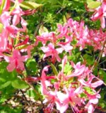

|
an online resource list
offered by
"Pinkster" represents one of the most fascinating topics for those interested in the early history of Albany. However, most so-called historians of the place and its people (myself included) have not been able to shed convincing new light on the subject beyond what first appeared in print during the first half of the nineteeth century. But people continue to ask. Otherwise, you might begin with the Google timeline Presentation of source material and other related items from Historic Hudson Valley Newpaper
article on the repeal of the Pinkster ban of 1811 by the Albany City
Council in 2011. notes A Pinkster Ode copied from the transcription presented on the Historic Hudson Valley website and reproduced here for convenience of access. In the future, we hope to be able to offer an original transcription. Until then, much gratitude to Historic Hudson Valley for taking a number of important first steps: A PINKSTER ODE For the Year 1803. Most Respectfully Dedicated To CAROLUS AFRICANUS, REX: Thus Rendered in English: KING CHARLES, Capital-General and Commander in Chief of the PINKSTER BOYS. By His Majesty's Obedient Servant, ABSALOM AIMWELL, Esq. Albany: Printed Solely for the Purchasers and Others, 1803. A Pinkster Song When leave the fig tree putteth out,When calves and lambs for mothers cry, When toads begin to hop about, We know of truth that summer's nigh. So after Pos (Easter) when hens do cluck, When gawky goblins peep and feed, And boys get fewer eggs to suck, We know that Pinkster comes indeed. At Pinkster, flow'rs will deck the field, And pleasures sweet will banish pain; Love-broken-hearts shall all be heal'd, Although they may be crack'd again. Ay, hearts, tho' hard as blistered steel And tough as nerves of turkey's thigh; Must break, or melt, whene'er they feel Bright Pinkster-sparks from Goonna's eye. of Pinkster, who presumes to sing, Must homage pay to Charles the King; For Charles, like Israel's mighty Saul, Is nobly born, well made and tall. But Charles, like Saul, was never found With naked people on the ground, Dreaming about his father's asses; No, no, King Charles dreams of the lasses. On wing'd Pegasus, laureat Pye May raise king George above the sky; And Gallic poets strain their art, To swell the fame of Bonaparte; These bards of gas can never raise A song that's fit for Charley's praise. Tho' for a sceptre he was born, Tho' from his tather's kingdom torn, And doom'd to be a slave; still he Retains his native majesty. O could I loud as thunder sing, Thy fame should sound, great Charles, the king, From Hudson's stream to Niger's wave, And rouse the friend of every slave. But, cease to clank my hero's chain, 'Twill give his royal bosom pain- Good Pinkster comes with merry glee, And brings a gladsome Jubilee. Rise then, each son of Pinkster, rise, Snatch fleeting pleasure as it flies. See Nature spreads her carpet gay, For you to dance your care away. "Care! what have we with care to do? "Masters! Care was made for you. "Behold rich free-men-see dull care "Oft make their bodies lean and spare. "How many weave the web of life, "With wool of care, and warp of strife. "With care of state and statesman groans, "As if its weight would break his bones. "But what have we with care to do, "My Pinkster boys? 'tis not for you." Thus spake the genius of the day, As up the hill she led the way. Now hark! the Banjo, rub a dub, Like a washer-woman's tub; And hear the drum, 'tis rolling now, Row de dow, row de dow,. The pipe and tabor, flute and fife, Shall wake the dullest soul to life. All beneath the shady tree There they hold the jubilee. Charles, the king, will then advance, Leading on the Guinea dance, Moving o'er the flow'ry green, You'll know him by his graceful mien; You'll know him on the dancing ground, For where he is folks gather round; You'll know him by his royal nose, You'll know him by his Pinkster clothes, You'll know him by his pleasant face, And by his hat of yellow lace; You'll know him by his princely air, And his politeness to the fair; And when you know him, then you'll see A slave whose soul was always free. Look till the visual nerves do pain, You'll "never see his like again." Ill-omen'd stars! malignant shone, When Demons dragg'd thee from thy throne! Afric with all her gold was poor, When thou vast wafted from her shore. Ah! when will Heaven, in justice drest, Avenge the wrongs of the opprest! Or will Heaven's Lord in vengeance swear, Tyrants shall never enter there! But-hush-now Charles the King harangues, A hundred fiddles cease their twangs. "Harken, ye sons of Ham, to me; "This day our Bosses make us free; "Now all the common on the hill, "Is ours, to do what e'er we will. "And let us by our conduct show, "We thank them as we ought to do. "While Demo hot and fiery Fed, "Boast who for freedom most have bled; "Let us, each woman, man and boy, "Strive, who call freedom most enjoy; "While on hot politics they sup, "And mostly drink a bitter cup; "Let us with grateful hearts agree "Not to abuse our liberty. "Tho' lordlings proud may domineer, "And at our humble revelsjeer, "Tho' torn from friends beyond the waves, "Tho' fate has doom'd us to be slaves, "Yet on this day, let's taste and see "How sweet a thing is Liberty, "What tho' for freedom we may sigh "Many long years until we die, "Yet nobly let us still endure "The ills and wrongs we cannot cure. "Tho' hard and humble be our lot, "The rich man's spleen we envy not. "While we have health, whence pleasure springs, "And peace to purchase fiddle-strings, "Let's with united voice agree "To hail this happy jubilee. "Behold for as green lawns are spread "O'er graves of British heroes dead. "Behold for us the vernal field, "A thousand blooming pleasures yield. "Zephyrs which play on bosoms fair, "Will wonton on our woolly hair; "While every bird on every tree, "Proclaims our happy jubilee: "Let us be jovial be as they, "All on this holy holiday." Thus spake King Charles, when all the crowd, Roused full strong, long and loud, And thank'd kind Heaven on bended knee, For this, their short-lived liberty. Reader, what here the bard relates, Is what the muse anticipates; As prophets erst were wont do to, When all they said was certain true. Now they strive the lyre again, With louder and with louder strain. The fiddles touch their sweetest strings, While the ebon lassie sings; And the pipe and tabor plays, Brisk and merry rounde lays. Again the fife and hollow drum Calls you-come together come, And sing a little, and laugh a little, And fiddle a little, and foot it a little, And while you swig the flowing cann, Always be an honest man. Africa's daughters full of glee, Join the jolly jubilee. Up the green and round the ring, They will throng about their king; Dancing true in gentle metre, Moving every limb and feature. Or under shades they talk and laugh, And the cheering nectar quaff. Handsome Phillis sings and shows Fine white teeth in ivory rows; And suffers him she fain would please, To give her now and then a squeeze. While the young Africs every where Merry as the pipers are. Charles! didst thou ever see A hundred monkeys on a tree, A hundred more upon the ground, With orang outangs playing round? Such numbers there might be, and noise; From such a multitude of boys. But should the rubble, wrong and rude, Dare on your dancing lines intrude, Then beat the banjo, rub a dub, And send the rogues to Beelzebub. Now, there will be, the eye to lure, All the world in miniature. Men of every grade you'll see, From lowest born to high degree. Indians from the west will come, And people from the rising sun. There you'll see brave mountaineers- The independent Vermonteers. You'll hear them ask for warlike news, Of Bonaparte and Jarsey blues. Then point out all the ways and means, To drive the French from New-Orleans; Where jealous Spain, our trade to stop, Has damm'd the Mississippi up. There, among the sons of Herman, You'll meet with many an honest German, Who will smoke and see it out, Mit' cool strong peer and sour crout. The Burgomaster in his place, Will move along with sober pace; Smoking, forest oat of the train, _____ will answer yaw and nayn. And next the Yankee, deep in trade, Riding on his pacing jade, Pull of learning, courage too, He whistles yankee doodle do. Brisk French Monsieurs, who come from far, _____ all at once, we, we, be gar; Sing Carmanole and libertie, With footre jang and sac cra je. The solemn Scot, whose ancient blood, Swell'd royal veins form Noah's flood. Can prove the kirk of Scotland stands Higher on hills than level lands. Explains predestination's law, Ken's the who' plan of Adams's fa'; Claims right divine to heap abuse On Papists, Turks, and stubborn Jews: And will from 'lection creed not swerve; He'd sooner hang, or burn, or starve. Saint Patrick's sons will here and there Give you a bold and manly stare, For Shela's children when they roam, Oft lave their modesty at home; Or wear it out by travelling far, And fighting either side, in war. From high Welch mountains there will be Saint Davy's sons, the brave and free. Peace to these good industrious men, May every one increase to ten. May every ship find pleasant gales, That brings the honest sons of Wales. A few, who came from Albion's isle, With envious, or contemptuous smile, Will look around, surcharg'd with spleen, And tell what they've in London seen. And how their beef is better far, Than ours, which smells so strong of tar. How pitch-pine-knots ar'n't half so good As English coal, for dressing food; Declare we mostly cook our meat, Not fit for gentlemen to eat- Yet eat, and stuff themselves so full, We shall find them proud and dull. Oh, yonder stump stands Jack the Rover, Who travell'd all the wide world over; Harangues, and tells you where he's been, What wonderous things he's heard and seen. Tells how the ships at anchor ride Where sixty feet's a common tide. The wafts you from the Bay of Funda, And blows you thro' the Straits of Sunda. From Aetna dips out boiling lava, Which, when 'tis cool, he leaves at Java, Then rides you in a dreadful storm, From Cape of Hope to Cape of Horn. Describes the island of Delight, The native charma of Otaheite. Shows you, at Owybee, Cook's bones, And his red blood, still on the stones; Tells how the savage gave a yell, When that BRAVE TAR ignobly fell. Coasts every little island round, And brings you safe to Nootka Sound: Tells how he went a hunting there, And caught an old Kampscatka bear. Outruns a Lapland deer with ease, Sails all between the Hebriddees, After after all becomes a wreck, Within ten miles of Boston-neck. At Boston, he describes a play; Ay, Boston where they us'd to pray,-- Declare the girls in Blue Beard sing Chick a ching, chick a ching. And then, a wiser song, some think, In tink a tink, tink a tink! Mimics Virginia negro players, Wish other sentimental airs, As, when he comes a rainy day, Plant Tobacco Joshua. So ends his travels with a jump, To let Jo Growler mount the stump. Jo is a politician; he Thro' thick and think bawl'd Liberty! Curst all the speculation laws, Made but to pamper mister's maws. Tells how the great Leviathan, Last winter, "laid a monstrous plan; "And join'd the great ones of the deep- "First hush'd the centinels to sleep: "And then fell too with main and might, "Work'd double tides both day and night "And form'd , a Bank, so strong and stout, "It damm'd the little fishes out. "Yes, friends, it was this monster's wish, "To eat up all the little fish. "And then to season such a fry, "He cast about with eager eye. "At length he spy'd (his nose's fault) "He spy'd the Onondaga Salt! "And with an appetite so keen, "He would have lick'd it all up clean; "And drank the lake, with every spring, "As if it were a little thing. "O had he swallow'd them by LAW! "They'd make a fire within his maw, "That soon would try his inward ____ "What! think to quiz a democrat! "Zounds! federals never us'd us so, "Nor gave us such a deadly blow. "By - whoever tempts the Western Whale "Must be more cautious of his tail. "O one of us! O Jefferson! "Where will thy head-strong children run!" "Then left the rostrum, rav'd and swore, Worse then he'd ever done before; When erst, the treatry form'd by Jay, Had barter'd all our rights away. The faithful heard him with applause, And curst the power that made the laws; Declar'd the maj'sty of the People, Was higher than the church's steeple. Drank their lov'd whiskey all up clean, If healths to Gid, and Gallatin, Then for the Mammoth shouted loud, And sally'd forth among the crowd. Now turn thy feet another way, Where the lads and lasses stray; Troops of whom you soon will meet, So gay, so delicate and sweet, That by their faces you can't tell, Which is beau, or which is belle. But other signs will let you know, The pretty belle from pretty beau. Now, whether Yankee, Gaul or Don, If he have green goggles on; If to be quite the thing he tries; If his fore-hair grows o'er his eyes; If it sho uld make him almost blind, If very short 'tis cut behind; Or if he wear a Brutus wig, With pantaloons all black and big, These and segors, will let you know. That it is certainly a beau. If she has eyes as black as jet, Is something of a smart coquette; If her white bosom rises fair, As though it low'd to take the air; If her sweet lips appear to view Like "rose-buds moist with morning dew," If she is either low or tall, Or over plump or over small; Or if she reaches just that height Which gives your eye the most delight; If her white dress be very thin, Embracing close her snowy skin, That, breezes blowing in her face, Shews Venus much improv'd in grace; By symbols such as these, we tell That rose of life, a charming belle- You'll see them now in couples pass, Bonny lad with bonny lass. Pleasures sweet they follow still, Up the slope and down the hill. There they find it all around, On the merry Pinkster ground. Every colour revels there, From ebon black to lilly fair. Ah! how much happiness they see, In one short day of Liberty! And now they move around the ring, To see again the jovial king. Charles rejoices at the sight And dances, bowing most polite. Now if you take a farther round You'll reach the Africs' burying ground. There as I rambled years ago, To pass an hour of love-lorn woe; I found a stone at Dinah's grave, On which was carv'd the following stave: Here lies Dinah, Sambo wife, Sambo lub him like he life, Dinah die 'bout sik week go, Sambo massa tell he so. "Theron in his travels found A broken grave-stone on the ground," Time, mould and snow had overgrown, The sculpture of the crumbling stone: But yet, tis said, "with much ado, He guess'd and spelt out Scipio." So from this stone the teeth of Time, Had knaw'd off part of every line, That I could learn but only half This most affecting epitaph. "Enough," said Watts, "I'll drudge no more, In turning the dull stoics o'er." "Enough, says I, to Dinah's shade, Thou too, wilt drudge no more, with spade, Nor hoe, nor pot, nor washing tub, Nor clean away-nor sweep, nor scrub. Sleep on good wench, or only doze, I'll not disturb thy blest repose. Thy honest soul has wing'd its flight, Beyond the reach of tyrant's sway; In realms of everlasting light- To meet good Benezet and Ley." Oh! 'tis the Jews-harp's well known chord, Which once was play'd to please the Lord, That harp three thousand years ago, With magic spell, could soften woe' And still dispenses purest joy O'er all the world, to very boy. That harp, whose little tongue of steel, Oft made the tribes of Israel feel, That very harp which David play'd, To lay a ghost or charm a maid. But now the sun declining shows, The day is drawing to a close, When boys and girls should quiet their sport, And to their mother's have resort. Yet pleas'd they rove about the hill, To wait the song of Whipper Will. Then to the city all repair, T'avoid the damps of evening air. Except a few whose nerves are strong, They join the revels all night long. May-hap some nymph these may be found Unwilling yet to leave the ground. Of these, we trust there are but few, Thus rambling o'er the nightly dew; For if they romp beyond the jail, 'Tis ten to one but they are frail. 'Tis ten to one they find a lover, With Joseph Growl or Jack the Rover, These, with a few from every clime Hail friends well met, at any time. Hot blooded blades, who love a riot, More than a Quaker loves his quiet. With scum of whig and scum of tory, Who walk in darkness seeking glory. Paddles with big shelalies there, Will take possession of the fair, Then under cover of the night, May have their choice-to run or fight. While Charles reigns unmolested still, The high commander of the hill; Thro' all his camps, Peace, smiling reigns, And no rude act his glory stains. But, night is now advancing far, We know it by the morning star. Let Charles retire and rest his feet, In gentle slumber soft and sweet: Till light shall on the mountains play And gild another Pinkster day. Now let us sing, long live the king, To reign on merry ground; While Pinkster boys, replete with joys, _____ his pavillion round. First question: Who was Absolom Aimwell??? Perhaps it was a pen name taken from other contemporary resources. The name was used in Philadelphia beginning about a decade earlier. If the poet was a resident of Albany in 1803, perhaps his name can be found on this list of important residents. The following valuable passages were printed in volume II of Munsell's Collections and are transcribed below from what appears to be the most utile Online posting. Every part of this exposition should be considered "in-progress" and is presented to provide known historical resources and to share current thinking regarding Pinkster in early Albany. These passages are presented as Munsell published them and indeed appear as unattributed under the headings of: [p. 323] PINKSTER FESTIVITIES IN ALBANY SIXTY YEARS AGO. [This great festival of the negroes when slavery existed in the state, and when every family of wealth or distinction possessed one or more slaves, took place usually in May, and continued an entire week. It began on the Monday following the Whitsunday or Pentecost of the Catholic and Episcopal churches, and was the carnival of the African race, in which they indulged in unrestrained merriment and revelry. The excesses which attended these occasions were so great that in 1811 the common council was forced to prohibit the erection of booths and stalls, the parades, dances, gaming and drunkenness, with which they were attended, under penalty of fine or imprisonment ; and being thereby deprived of their principal incitements and attractions, the anniversary soon fell into disuse, and is therefore unknown to the present generation. The following account of the Pinkster jubilee is taken from the Cultivator, for which it was written by Dr. James Eights, as the recollections of what he witnessed in his youth, when the custom was at its zenith. Pinkster hill, the scene of these celebrations, was the site of the Capitol, before the hand of man was stretched forth to pull down that eminence. Afterwards it was held at various places, but on the death of King Charles, it was observed with less enthusiasm, and finally sank into such a low nuisance as to fall under the ban of the authorities.] Bright and beautifully broke the morning that ushered in the first great day of the Pinkster jubilee. The air was filled with melody, and the purple hued martins, from their well provided shelter against the walls, or from the far-projecting eaves of many antiquated mansions, were chattering with noisy garrulity, as if in thankfulness for having been brought safely through the night to witness the light of this new- born day. The lilacs in the garden around were everywhere redolent with sweet smelling odors, while the pink blossomed azalias from the neighboring plains fairly saturated the bright morning air with their ever-delicious fragrance. But, within doors, all was bustling commotion, nor did the overjoyous little ones, with their merry, gleesome mirth-ring- ing music to the ear, contribute greatly to quell these conflicting tumults within, and bring peace and order to this bewildering scene ; but at every turn, where'er you went, you would be sure to encounter some one or more of these juvenile prattlers, frisking about with various garments on their arms and sometimes strewing them in wild dismay, all over the chamber floor, calling lustily for aid to adjust them in their befitting position ; nor could a frown or even a scolding tongue for a moment quiet them in their noisy vociferations and frolicsome glee. Quiet in some degree was at length restored to the household. The younger members of the family — both white and colored — had peacefully submitted to the process of cleansing, and were now tastefully adorned in all their varied finery, with numberless small coins merrily jingling in their ample pockets, seemingly keeping time to their sprightly [324] movements, as -well as to the silvery music of their mirthful voices. To witness this scene of innocent delight was a pleasing sight to all, and caused the bright eye of the mother to sparkle with pride, and her affectionate heart to expand within her bosom. Under the careful guidance of a trusty slave, forth we were ushered into the densely thronged streets, and never shall we forget the scene of gayety and merriment that there prevailed — joyous groups of child- ren, all under the protecting care of some favorite old dame or damsel, gayly decorated with ribbons and flowers of every description, blithly wending their way along the different avenues that led to the far-famed Pinkster hill — and long before we reached the appointed place of rejoic- ing, were our ears greeted with the murmuring sound of many voices, harmoniously intermingled with the occasional shouts of boisterous mirth, and when we arrived on the field we found the green sward already dark- ened by the gathering multitude, consisting chiefly of individuals of almost every description of feature, form and color, from the sable sons of Africa, neatly attired and scrupulously clean in all their holiday habiliments, to the half clad and blanketed children of the forest, ac- companied by their squaws, these latter being heavily burdened with all their different wares, such as baskets, moccasins, birch-bark, nick nacks, and many other things much too numerous for us even here to mention, and boys and girls of every age and condition were everywhere seen gliding to and fro amid this motley group. The Pinkster grounds, where we now found ourselves comfortably provided for in a friendly booth or tent, securely protected from the pressure of the swaying multitude without, gave us a most convenient opportunity to inspect the place, and witness at our leisure the entire proceedings of this tumultuous mass of human beings, as they passed in disorderly review before our eyes. The grounds were quaintly laid out in the form of an oblong square, and closely hemmed in with the rude buildings on every side save one, and this was left free, so as to give entrance and freely to admit the crowd. Beyond this square, and in the rear of all the tents, were to be found the spaces appropriated to the various exhibitions, such as of wild animals, rope dancing, circus-riding and the playing ground of all simple gaming sports. Here might be seen for a moderate pittance, the royal tiger of Bengal, and the lordly lion from Africa, with a monkey perched over the entrance door, pro- fusely provided for by the youth and children of the white population ; and much did these little ones enjoy themselves in witnessing the won- derful agility with which this diminutive satire on man caught the numerous cakes and other good things thrown within his reach ; and then there was Mademoiselle Some-one, with a hard, unpronounceable name, to perform amazing wonders on the slack rope ; and in the next enclosure was Monsieur Gutta Percha, to ride the famous horse Selim, and throw a somerset through a blazing hoop, attended by the great E,ickett, the celebrated clown of the day, to display his stock of buffoonery on horseback, and break his neck, if necessary, to afford the amplest satisfaction to the assembled auditors. Thus passed the first day of the festival, merry enough, no doubt, but, being considered vastly ungenteel for the colored nobility to make their appearance on the commencing day, we must defer our more minute details of the ceremonies until the approaching morrow. [325] The morning sun rose again as beautifully over the smiling landscape as on the preceding clay, and cast a cheerful glow of animation over everything around; the excited youngsters, too, were all awake at the early chirping of the birds, and with their silver-toned voices gave a lively chorus to the surrounding scene. After the preliminary preparation, as on the previous day, each was again attired in an appropriate manner to revisit the festal meeting at the usual hour. Early again the crowd were assembled, fully prepared to enter with pleasurable feelings into all the exciting events, as they from time to time should transpire ; but far more circumspect were they, and orderly in their demeanor, as all the more respectable members of their community were there to witness any discreditable act, and ever afterward be sure to reward the transgressors with their most severe indignation and contempt. The master of ceremonies, on this occasion — the Beau Brummel of the day — was Adam Blake, then body servant to the old patroon, and a young man in all the grace and elegance of manner, which so eminently characterized his progress through life until his dying day; to him was unanimously entrusted the arduous duty of reducing to some kind of order this vast mass of incongrueut material, which his superior ability soon enabled him to accomplish with complete success. The hour of ten having now arrived, and the assembled multitude being considered most complete, a deputation was then selected to wait upon their venerable sovereign king, " Charley of the Pinkster hill," with the intelligence that his respectful subjects were congregated, and were anxiously desirous to pay all proper homage to his majesty their king. Charles originally came from Africa, having, in his infant days, been brought from Angola, in the Guinea gulf; and soon after his arri- val became the purchased slave of one of the most ancient and respect- able merchant princes of the olden time, then residing on the opposite bank of the Hudson. He was tall, thin and athletic; and although the frost of nearly seventy winters had settled on his brow, its chilling influ- ence had not yet extended to his bosom, and he still retained all the vigor and agility of his younger years. Such were his manly attributes at this present time. Loud rang the sound of many voices from the neighboring street, shoutingly proclaiming the arrival of the master of the revels, and soon the opening crowd admitted him within their presence, and never, if our memory serve us, shall we forget the mingled sensations of awe and grandeur that were impressed on our youthful minds, when first we beheld his stately form and dignified aspect, slowly moving before us and approaching the centre of the ring. His costume on this memorable occasion was graphic and unique to the greatest degree, being that worn by a British brigadier of the olden time." Ample broad cloth "scarlet coat, with wide flaps almost reaching to his heels, and gayly ornamented every- where with broad tracings of bright golden lace; his small clothes were of yellow buckskin, fresh and new, with stockings blue, and burnished silver buckles to his well-blacked shoe ; when we add to these the tri- cornered cocked hat trimmed also with lace of gold, and which so grace- fully set upon his noble, globular pate, we nearly complete the rude sketch of the Pinkster king. The greetings were at length over, and the hour of twelve having arrived, peace and tranquility had once more been partially restored to [326] the multitude; his majesty, the king, was in the midst of his assembled friends and subjects, and the accomplished master of the ceremonies, with his efficient aids were busily employed in making the necessary arrangements to commence the festivities with zeal and earnestness; partners were then selected and led out upon the green, and the dancing was about to commence. The dance had its peculiarities, as well as everything else connected with this august celebration. It consisted chiefly of couples joining in the performances at varying times, and continuing it with their utmost energy until extreme fatigue or weariness compelled them to retire and give space to a less exhausted set ; and in this successive manner was the excitement kept up with unabated yigor, until the shades of night began to fall slowly over the land, and at length deepen into the silent gloom of midnight. The music made use of on this occasion, was likewise singular in the extreme. The principal instrument selected to furnish this important portion of the ceremony was a symmetrically formed wooden article usually denominated an eel-pot, with a cleanly dressed sheep skin drawn tightly over its wide and open extremity — no doubt obtained expressly for the occasion from the celebrated Fish slip, at the foot of the Maiden's lane. Astride this rude utensil sat Jackey Quackenboss, then in his prime of life and well known energy, beating lustily with his naked hands upon its loudly sounding head, successively repeating the ever wild, though euphonic cry of Hi-a-bomba, homba, bomba, in full harmony with the thumping sounds. These vocal sounds were readily taken up and as oft repeated by the female portion of the spectators not otherwise engaged in the exercises of the scene, accompanied by the beating of time with their ungloved hands, in strict accordance with the eel-pot melody. Merrily now the dance moved on, and briskly twirled the lads and lasses over the well trampled green sward; loud and more quickly swelled the sounds of music to the ear, as the excited movements increased in energy and action; rapid and furious became their motions, as the manifold stimulating potions, they from time to time imbibed, vibrated along their brains, and gave a strengthening influence to all their nerves and muscular powere; copiously flowed the perspiration, in frequent streams from brow to heel, and still the dance went on with all its accustomed energy and might; but the eye at length, becoming weary in gazing on this wild and intricate maze, would oftimes turn andseek relief by searching for the king, amid the dingy mass; and there, enclosed within their midst, was his stately form beheld, moving along with all the simple grace and elastic action of his youthful days, now with a partner here, and then with another there, and sometimes displaying some of his many amusing antics, to the delight and wonderment of the surrounding crowd, and which, as frequently, kept the faces of this joyous multitude broadly expanded in boisterous mirth and jollity. And thus the scene continued until the shades of night and morning almost mingled together, when the wearied revelers slowly retired to their resting places, and quickly sought their nightly repose. Morning again returned with all its renovating influence, when most of the sable throng were seen loitering along the streets toward the [327] accustomed field of sports; and the bright day moved merrily onward to its close, with all the happy enjoyments of that which had preceded it; and long ere the night had again arrived, the upper class of revelers had left the ground to seek entertainment elsewhere, or spend the evening in tea-party gossip, among their numerou3 friends and visitors. And thus terminated the third day of the Pinkster festival. On the succeeding fourth and fifth days, the grounds were left to the free enjoyment of the humbler classes, and well did they improve the time in joyous merriment until near the close of the latter, when, instigated by the more potent draughts they swallowed, speedily brought on wrangling discord, quickly succeeded by rounds of fighting, bruised eyes, and bloody noses unnumerated, big Jack Van Patten, the city bully, being unanimously declared the champion of the lists, having successfully overthrown all his numerous opponents. The last day of the week, and also of the Pinkster revels, was chiefly occupied in removing the unpurchased materials from the field, and also in the distribution of the remaining vestiges of the broken meats and pastries to the poorer classes of individuals who still lingered about the now almost abandoned ground of rejoicing. Some few liquoring establishments still continued their traffic, being amply patronized by the more rude and belligerent number that yet remained, as if loth to leave the endearing spot as long as a stimulating drop could there be procured. The following sabbath was literally considered by them as really a day of rest, and mid-day's sun was at its height e'er many awoke from their refreshing slumbers, and the succeeding day found the numerous visitors joyfully journeying toward their respective homes. Our ancient city was at length again left to its usual quietude, and all things within its confines soon became properly restored to its accustomed routine of duty and order. And thus ended the Pinkster holidays, with all its rolicking festivities.
Home | Site Index | Navigation | Email | New York State Museum first opened: 6/4/11; last updated and revised 3/24/12 |